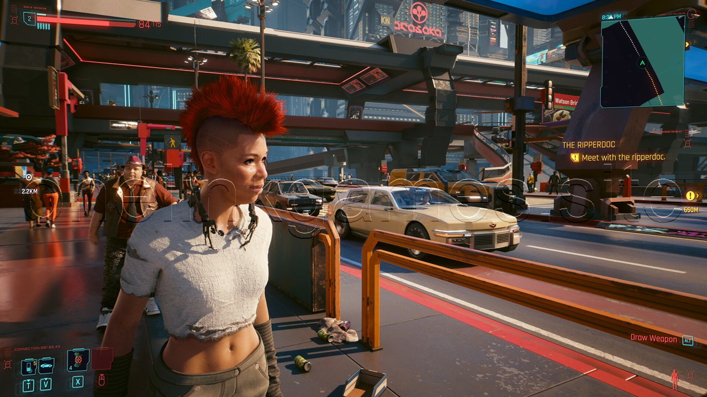
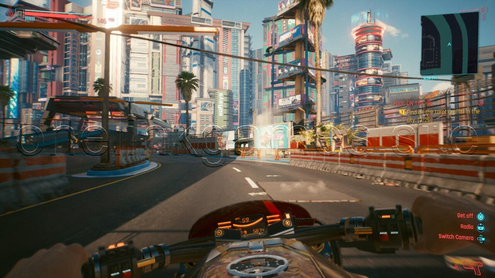
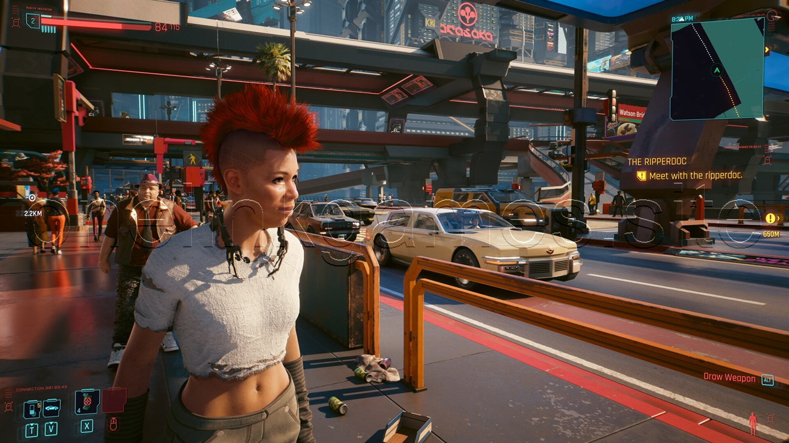
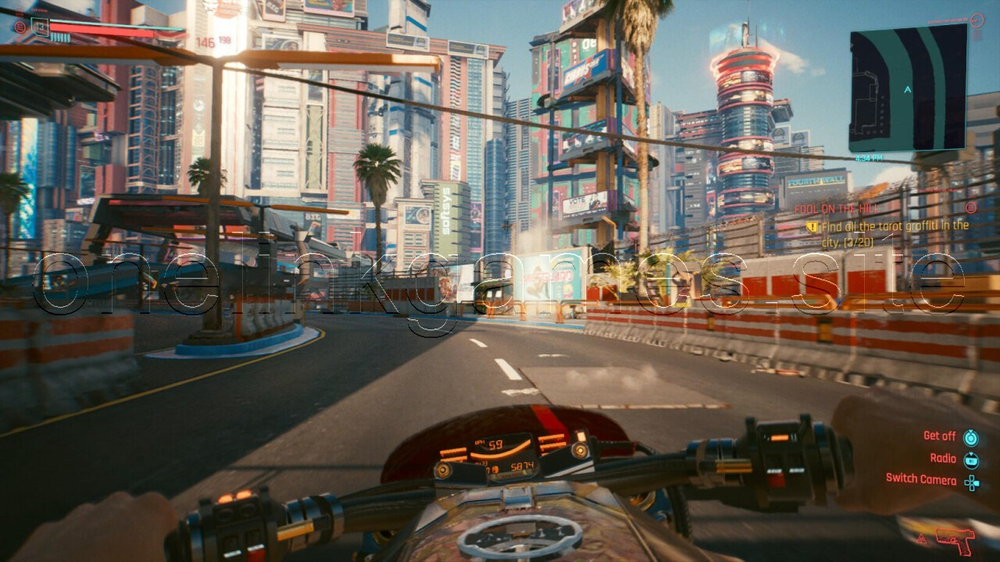

Cyberpunk 2077
Setup Size = 70.64 GB
Platforms: PlayStation 4, Windows, and Xbox
About This Game
Cyberpunk 2077: Phantom Liberty , the exciting and much awaited video game “Cyberpunk 2077: Phantom Liberty” plunges players into a dystopian future rife with high-tech intrigue, criminal underworlds, and an engrossing plot. This game, which was created by a team of imaginative designers, expands the famous “Cyberpunk 2077” universe and provides a new viewpoint on the neon-lit, technologically advanced society. “Phantom Liberty” gives players the chance to live the life of a tough and resourceful protagonist traversing a city on the verge of disaster. The game is set in the expansive Night City. With a painstakingly rendered urban backdrop, cutting-edge technology, and a wide cast of individuals who bring this dark and vivid world to life, the game’s aesthetics are nothing short of astounding. “Cyberpunk 2077: Phantom Liberty” stands out because its compelling narrative. Players will find themselves embroiled in a web of conspiracies, rival factions, and morally complex decisions as they carve their own path through the city’s
Screenshots
 




System Requirements
- Windows 7 or 10 64-bit
- Intel Core i5-3570K or AMD FX-8310
- Memory: 8 GB RAM
- Graphics card (AMD): AMD Radeon RX 470
- Graphics card (NVIDIA): NVIDIA GeForce GTX 780
- DirectX: 12
- FREE DISK SPACE: 80 GB